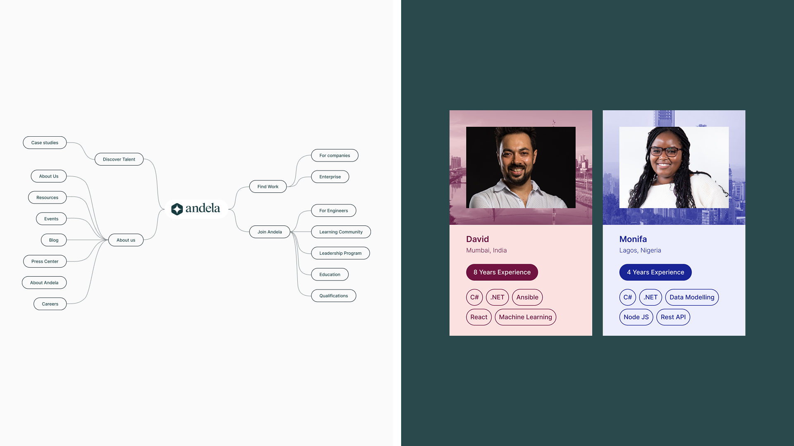
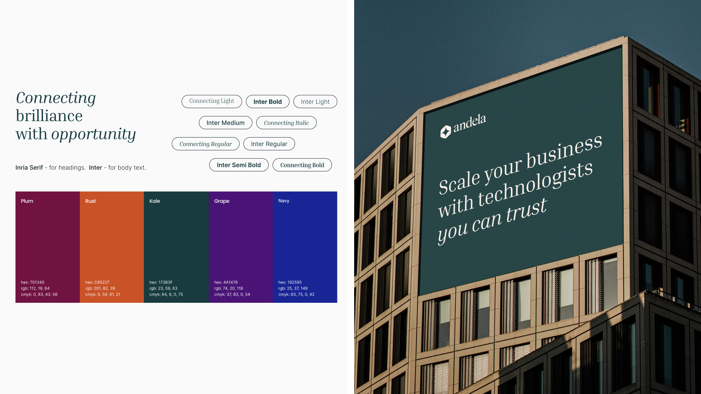
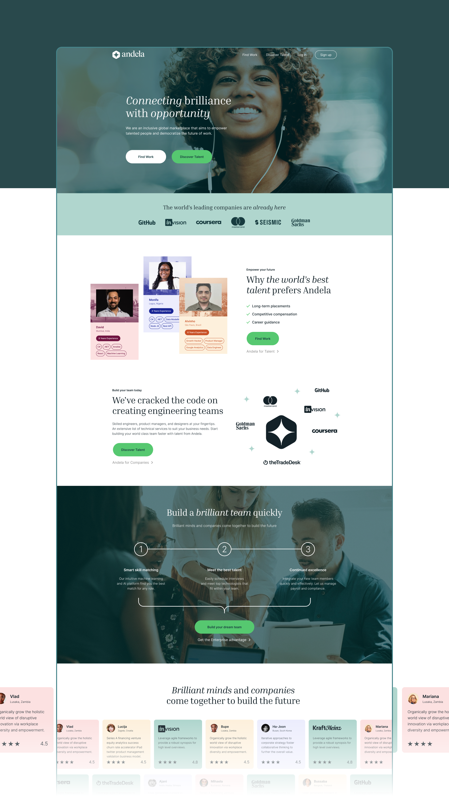
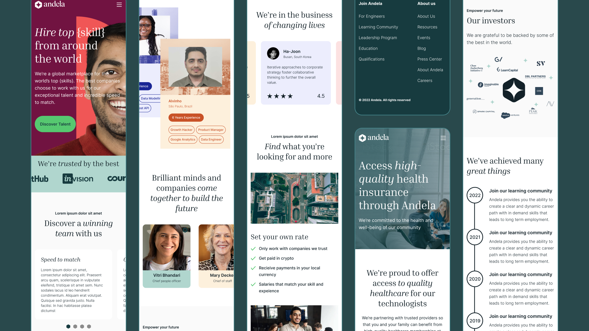
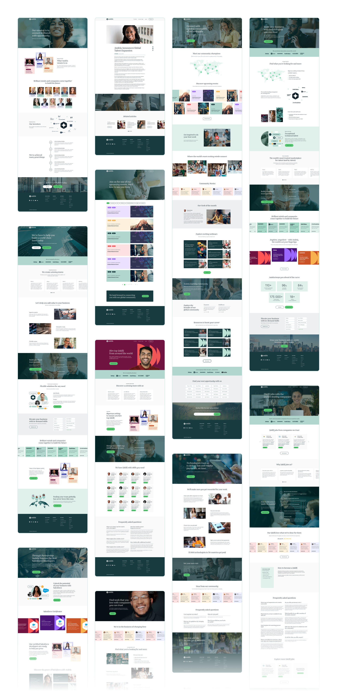

Andela · via NewDay agency · 2024 · Remote
One sitemap, two audiences
Rebuilding a talent marketplace’s information architecture and brand system so engineers and companies stop competing for the same navigation.
Results
+35% retention
Engineers returning to the platform after the redesign shipped, per the agency’s engagement report.
12 links → 2 paths
Navigation rebuilt around the two real audiences instead of accumulated page types.
9 templates, 1 system
Typography, color, and a single card component rolled out across the full site rebuild.
Situation
Andela’s site had grown page by page — blog, events, community, about, careers — each maintained by a different team, each with its own type scale and color logic. Two very different audiences, engineers looking for work and companies hiring them, were competing for the same top-level navigation.
Adding more links wasn’t the fix. The site needed a structure that started from who was looking, not from what content already existed.
Deciding insight
Mapping every existing page against the two real audiences, not against content type, showed the whole site reduced to two branches — Find Work / Join Andela for engineers, Discover Talent / For Companies for the people hiring them.
Everything else was noise competing with those two paths for the header.
Research
Audited every live page against a card-sorted map of the two audiences’ goals, then cross-checked it against the type and color choices already in informal, inconsistent use across templates.


Approach
Redrew the sitemap around the two audiences and rebuilt navigation from it. Paired it with a small brand system — Inria Serif for display type, Inter for body, a five-color palette of plum, rust, kale, grape, and navy — so nine templates could share one visual language instead of drifting further apart.
Rebuilt the talent card once as a single reusable component and used it everywhere a person needed representing — profile previews, testimonials, community spotlights — instead of each team building its own version.


